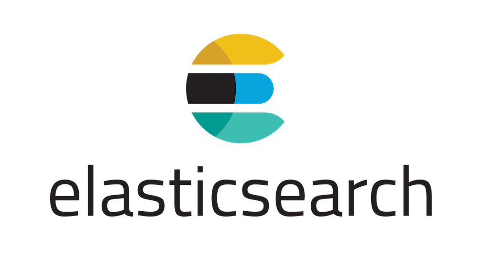

MySQL의 데이터를 Elasticsearch로 마이그레이션 할 때 다음과 같은 방법이 존재한다.
일일이 노가다로 집어넣기- Logstash의 logstash-input-jdbc 플러그인 사용하기.
- go-mysql-elasticsearch 사용하기.
logstash-input-jdbc 같은 경우에는 다음과 같은 단점이 존재한다.
- 테이블 명 일일이 입력
- 테이블 별 프라이머리 키 일일이 입력
- 메모리도 많이 잡아먹고, 엄청나게 오래 걸림(성공해본 적이 단 한 번도… ㅜㅜ)
하지만 단점만 존재하는 것은 아니고 SQL 쿼리문을 써서 사용할 데이터를 뽑아올 수 있다는 점이 큰 메리트라고 할 수 있다.
go-mysql-elasticsearch의 장단점은 logstash-input-jdbc와 반대가 아닐까 싶다.
따라서 go-mysql-elasticsearch를 토대로 마이그레이션하는 방법을 설명하겠다.
(내가 Mac을 쓰므로 맥 기반으로 설명을…)
사전 설치 사항
- MySQL
- Elasticsearch
- Git
MySQL bin log 설정하기
기본적으로 go-mysql-elasticsearch는 MySQL의 bin log를 토대로 싱크를 맞추기 때문에 설치하기 전에 bin log를 세팅해주자.
기존적이르 replication DB(혹은 Slave DB) 말고 Master 쪽에 bin log를 만들어주자.
replication DB(혹은 Slave DB)는 Master DB의 bin log를 토대로 싱크를 맞추기 때문에 Master DB 쪽에 bin log를 세팅해주는 게 정신 건강에 좋다.
먼저 MySQL의 설정을 고쳐야하는데 다음 커맨드로 설정 파일을 찾아낼 수 있다.1
2
3
4mysql --verbose --help | grep my.cnf
# 그럼 아마 다음과 비슷한 결과가 나올 것이다.
# /etc/my.cnf /etc/mysql/my.cnf ~/.my.cnf
왼쪽에 있는 파일부터 순차적으로 참조하여 하나라도 걸리는 게 있으면 그 녀석이 설정 파일이 되는 것이다.
나의 경우에는 /usr/local/etc/my.cnf 파일을 제외하고 아무런 설정파일이 미존재 파일이라 해당 파일을 다음과 같이 수정해주었다.1
2
3
4
5[mysqld]
bind-address = 127.0.0.1
log-bin = mysql-bin
server-id = 1001
binlog_format = ROW
log-bin은 bin log가 만들어질 경로이고, server-id는 go-mysql-elasticsearch와 맞춰줘야한다.
또한 go-mysql-elasticsearch가 binlog_format = ROW만 지원하므로 위와 같이 적어주자.
설정 파일을 바꿨으므로 MySQL을 다시 시작하자.1
mysql.server restart
서버가 재시작 됐다면 아래 쿼리를 입력해서 bin log가 제대로 생성되고 있는지 알아보자.1
SHOW VARIABLES LIKE 'log_bin';
golang 설치하기
우선 go-mysql-elasticsearch는 golang으로 만들어져있으므로 golang부터 설치해보자.
설치는 다양한 방법이 있지만 가장 간단한 brew로 진행을 하겠다.1
brew install go
Setting GOPATH를 참고하여 GOPATH를 지정해주자.
본인이 bash를 쓰는지 zsh를 쓰는지 잘 판단해서 GOPATH를 지정해주자.
그리고 해당 설정 파일에 다음과 같은 내용을 추가해주자.
아래는 brew를 이용하여 설치한 GOPATH이니 버전과 본인이 설치한 버전에 맞춰서 GOPATH를 알맞게 지정해줘야한다.1
export GOPATH=/usr/local/Cellar/go/1.9.2
그리고 터미널을 새로 띄우거나 껐다 켜야 GOPATH가 제대로 잡히는데 아래 커맨드를 입력하면 새로고침(?) 효과가 있다.1
2
3source ~/.zshrc
# 또는 아래와 같이...
# source ~/.bash_profile
go-mysql-elasticsearch 설치하기
해당 저장소의 Install을 보고 따라하면 된다.
아래 명령어들을 따라 치자.
혹시나 실험적 기능을 이용해보고 싶은 사람은 깃헙 주소를 github.com/perfectacle/go-mysql-elasticsearch과 같이 고쳐서 설치하자.1
2
3
4
5
6
7
8# package github.com/siddontang/go-mysql-elasticsearch: no Go files in ... 이런 에러가 나면 무시해주자.
go get github.com/siddontang/go-mysql-elasticsearch
# cd: no such file or directory: ... 이런 에러가 나면 GOPATH가 제대로 설정되지 않은 것이니 PATH를 다시 잡거나 터미널을 다시 열고 시도해보자.
$GOPATH/src/github.com/siddontang/go-mysql-elasticsearch
# Makefile에 있는 스크립트들을 실행하는 커맨드이다. 코드를 수정하고 컴파일하려면 해당 커맨드를 실행해야한다.
make
사용하기
대충 문서 보고, 설정 예제 파일 보면 어떻게 해야할지 각이 나온다.
DB와 테이블 관련 내용은 Source를 만지면 되고, 특정 컬럼만 싱크를 맞추는 등등의 복잡한 설정을 하려면 Rule를 만져야한다.
또한 기본적으로 go-mysql-elasticsearch는 하나의 인덱스(RDS로 치면 DB)에 여러 타입(RDS로 치면 테이블)을 두는 게 아니라
한 인덱스에 하나의 타입(테이블 명과 일치하게끔)을 넣는 걸 디폴트 동작으로 두었으니 하나의 인덱스에 다 때려박고 싶거나 한다면 위의 Rule 파트를 참조해야한다.
또한 Wildcard table을 이용하면 테이블 이름을 일일이 입력해야하는 수고를 줄일 수 있는데, 아직은 그 기능이 좀 미약하다.
혹시나 데이터베이스 내에 존재하는 모든 테이블의 싱크를 맞추고자 한다면 포크 뜬 저장소를 다시 go get 메소드로 받아서
.toml 파일에서 `tables = [““]`로 설정해주면 된다.
모든 설정을 마쳤으면 아래 커맨드를 입력해서
1 | # 반드시 go-mysql-elasticsearch가 저장된 곳으로 이동 후에 아래 커맨드를 입력해야한다. |
server_id를 모르는 경우
AWS RDS의 경우 my.cnf를 수정하는 대신 Parameter Group를 정하게 되는데 거기서 server_id를 직접 지정하는 게 아니라 generate 되는 값이다.
따라서 우리가 직접 지정하는 것이 아니기 때문에 어떤 값으로 generation 됐는지 확인하기 위해서는 아래 쿼리문을 실행해보고 *.toml 파일에 적용시켜주면 된다.1
SELECT @@server_id
리셋하기
go-mysql-elasticsearch를 맨 처음에 켰을 때는 싱크가 아주 잘 맞는다.
하지만 실수(?)로 해당 프로그램을 종료했다가 재시작하면 빈로그가 종료된 시점 이후의 데이터에 대해서만 싱크를 맞추기 시작한다.
이럴 땐 *.toml 파일의 data_dir로 설정한 디렉토리로 가서 master.info 파일을 삭제한 후 프로그램을 재시작하면 된다.
실험적 기능
go-mysql-elasticsearch 저장소로 풀리퀘를 날렸지만 나의 실력 미숙으로 인해 컨벤션이나 테스트 코드 등등의 부분이 부족하여 아직 머지되지 않은 기능들이다.
그렇기 때문에 글을 작성하는 17/11/06에는 최신버전임을 장담하지만 그 이후에는 디프리케잇 된 버전이 될 가능성도 높다.
데이터베이스 내에 존재하는 모든 테이블을 싱크하는 기능
간단하게 아래와 같이 tables에 *를 넣는 것만으로 가능하다.1
2
3
4
5
6[[source]]
schema = "test"
tables = ["*"]
# *을 쓰면 테이블을 2개 이상 넣으면 오류가 난다.
# tables = ["*", "table"]
Primary Key가 없는 테이블 싱크 안 맞추기
만약 Primary Key가 없는 테이블이 있는 경우, 으로 모든 테이블과 동기화를 맞추는데 다음과 같은 에러와 마주치게 될 것이다..../go-mysql-elasticsearch/river/river.go:244: schema.table must have a PK for a column
그럼 또 일일이 PK가 존재하는 테이블을 입력해야한다.
이런 수고를 미연에 방지하고자 .toml 파일에서 아래 속성만 true로 바꿔주면 PK가 없는 테이블은 자동 무시하게 된다.1
2# Primary Key가 없는 테이블은 무시
skip_non_pk = true